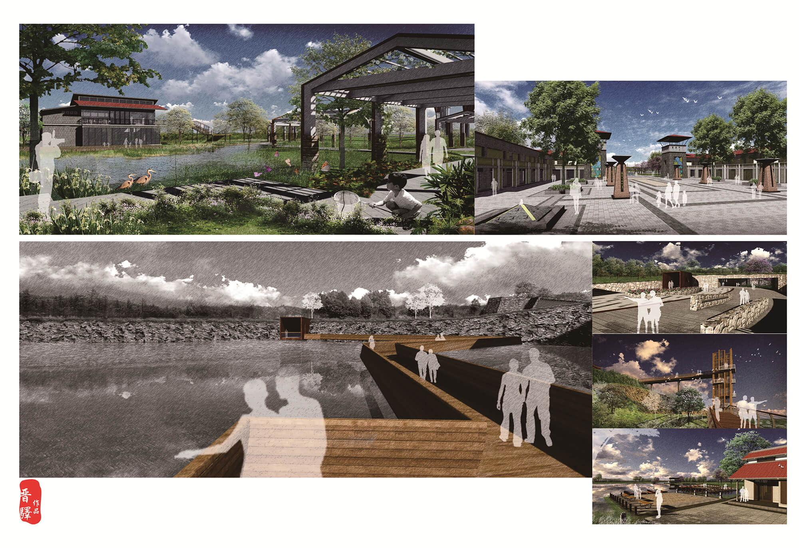

Conception du parc volcanique
Fond de la conception- Parc municipale est l'un des principaux de la construction urbaine.Il Est une partie importante des écosystèmes urbains et le paysage urbain.Est de répondre aux besoins des résidents urbains de loisirs, assurer le repos, la tournée, la formation, la communication, et le lieu collective pour diverses activités culturelles.
Parc municipale affecte non seulement la qualité de vie des gens, mais aussi embellir la ville a régler petite environnement urbain, améliorer la qualité de l'air urbain, afin de maintenir l'équilibre écologique et la variété de l'effet écologique de la prévention des catastrophes et l'atténuation urbaine.
Description de la conception
1.Créer un espace écologique des fonctions diverses, promouvoir un nouveau mode de vie .
2.Créer un Parc forestier municipal qui s'appuie sur les ruines du volcan et met l'accent surla vulgarisation des connaissances avec des installations parfaites pour des loisirs sportifs et des visites écologiques.
Vision: Créer un parc d'attraction de paysages culturels distincts avec une fonction écologique qui amène un nouveau mode de vie.
Analyse de la conception
Le projet est situé dans la ville de Foshan, province du Guangdong, le transport est commode. A l'ouest du parc se trouve la rivière Dongping, tandis qu'au nord se trouve le milieu de la rivière Fen. La localisation, c'est-à-dire le domaine d'intersection des deux rivières, reflète un bel environnement. Le sommet est le point le plus élevé du centre-ville, dominant ainsi toute la ville.
Surperficie de planification du parc de 70 hectares, avec des élévations diverses. Dans l'entourage de ce parc, il y a des terrains agricoles et des étangs traversant du nord au sud, ainsi que des usines et des entrepôts situés respectivement au coin est et au coin sud-est.

Extraction des élément
Plan de la conception
Les rendus
